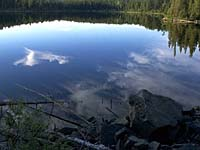
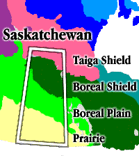
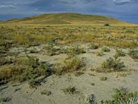
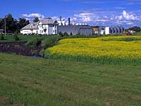
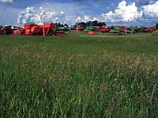

ECOREGIONS
Selwyn Lake Upland
Tazin Lake Upland
Athabasca Plain
Churchill River Upland
Mid-Boreal Upland
Mid-Boreal Lowland
Boreal Transition
Aspen Parkland
Moist Mixed Grassland
Mixed Grassland
Cypress Upland
|
 |
|
|
With eleven different ecoregions, Saskatchewan is the land of natural beauty. Explore spectacular settings, like Clearwater Provincial Park, that have inspired people for centuries.
![[ v f t]](../media/stuff/vft_spin.gif)
|
|
|
The Saskatchewan landscape reflects the long-term interaction of its geology, climate, and recently, of its people.
|

The shape of the landscape is a result of the geology of the province, and, in particular, with the effects of glaciation.
|

On the Shield, where bedrock consists of hard Precambrian rocks, glacial erosion was the dominant process yielding an ice-scoured landscape of lakes, rock outcrops, and thin glacial deposits.
|

To the south of the Shield, where the bedrock is comprised of softer sedimentary rocks, glacial deposition was widespread, and the bedrock of today is covered with thick glacial deposits giving the landscape a more subdued appearance.
|

The landscape has been shaped, over the last 10,000 years, by climatic forces. These forces, acting upon the landscape left by retreating glaciers, have created broad, distinctive zones of soil and vegetation.
|

| Ecozone: |
Ecoregion: |
| Taiga Shield |
Selwyn Lake Upland
Tazin Lake Upland |
| Boreal Shield |
Athabasca Plain
Churchill River Upland |
| Boreal Plain |
Mid-Boreal Upland
Mid-Boreal Lowland
Boreal Transition |
| Prairie |
Aspen Parkland
Moist Mixed Grassland
Mixed Grassland
Cypress Upland |
|

In the southwestern part of the province, a dry climate has yielded prairie vegetation and brown soils, like those found in the Grasslands National Park (shown left).
|

These dry conditions give way northward and eastward to parkland and black soils.
|

Continuing northward and eastward, you will enter the boreal forest and the gray soils, as the climate becomes cooler and more moist.
|

Farther north, under even cooler climate, coniferous forests prevail. In no other part of Canada are the zonal relationships between climate, soil and vegetation so clearly displayed.
|

Recently, human settlement and, in particular, agricultural development have been the predominant force in the evolution of the Saskatchewan landscape.
|
|
|